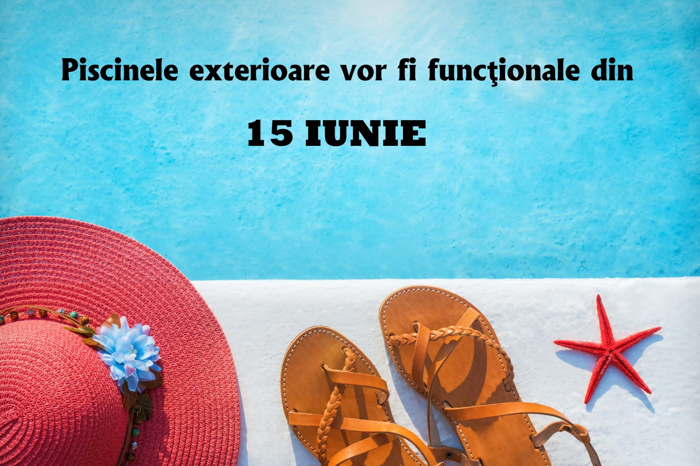

complex teren de volei pe nisip Brasov
Teren de volei pe nisip
În perioada extrasezonului de vară (15 septembrie 2011 - 01 mai 2012) terenul de volei pe nisip este INCHIS!
După o baie în piscină te aşteaptă un teren standard cu nisip fin şi fileu, unde poţi juca o partidă de volei pe cinste…şi în plus te distrezi alături de prieteni. Nu uita să soliciţi mingea de volei la recepţia complexului ( în schimbul unei garanţii ).
.jpeg)

Tobogane cu apa
Pentru a evita eventualele accidente, vă rugăm să respectaţi regulile de utilizare a toboganelor, cât şi poziţia corectă ce trebuie adoptată pe parcursul traseului.
.jpeg)
Dusuri rustice
Duşul, ca modalitate de spălare şi răcorire a corpului, a existat din cele mai vechi timpuri. Înainte de a exista robineţi, automatizări, pompe şi tehnologie de ultimă oră, oamenii au găsit soluţii dintre cele mai simple pentru a primi apă din belşug.
Teren de volei pe nisip
După o baie în piscină te aşteaptă un teren standard cu nisip fin şi fileu, unde poţi juca o partidă de volei pe cinste…şi în plus te distrezi alături de prieteni. Nu uita să soliciţi mingea de volei la recepţia complexului ( în schimbul unei garanţii )

Bazine exterioare
Pe timpul verii relaxarea şi distracţia se extind şi pe cei 12.000 mp destinaţi sezonului estival adresându-se tuturor categoriilor de vârstă. Bazinul de înot şi bazinul pentru copii sunt încălzite, temperatura variind între 24-28 grade, în funcţie de condiţiile atmosferice.